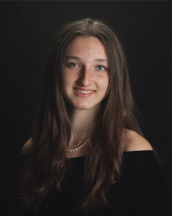

Researcher • Engineer • Sustainability Advocate
BSE, Electrical & Computer Engineering + Computer Science, Duke University Pratt School of Engineering
I am a Duke University merit scholar studying Electrical and Computer Engineering and Computer Science. My interests span artificial intelligence, distributed systems, wireless technologies, and sustainable innovation. This portfolio highlights selected research, publications, technical projects, and professional experiences.
Developed a distributed scientific data streaming and visualization pipeline using the NSF FABRIC testbed. Built Python and Jupyter workflows for transmitting, processing, and visualizing Fermilab-related experimental detector data across networked computing infrastructure.
Engineered Python and n8n workflows integrating custom GPT models and retrieval-augmented generation (RAG), reducing procurement document review time by 93%. Developed data pipelines for extracting, summarizing, and classifying French public procurement documents.
Conducted research on scalable wireless digital twins using NVIDIA Sionna. Co-developed ClickDT, a five-module platform integrating LiDAR and OpenStreetMap data to generate high-resolution 3D wireless simulation scenes. Contributed to frontend UI/UX and backend processing pipelines.
Developed Python and MATLAB graphical interfaces for instrument control and data analysis for an underwater miniature mass spectrometer. Co-authored two peer-reviewed publications on spectral reconstruction and super-resolution mass spectrometry.
Built an FPGA-based jukebox featuring a custom Verilog CPU, RFID song selection, coin-operated inputs, memory-mapped I/O, and PWM audio playback.
Developed projects exploring processor design, instruction execution, and digital systems using hardware simulation and programming.
Designed and implemented a self-sustaining composting program at The Hawbridge School. Developed educational materials to promote environmental literacy and support the program's long-term sustainability.
Additional academic and technical projects available upon request.